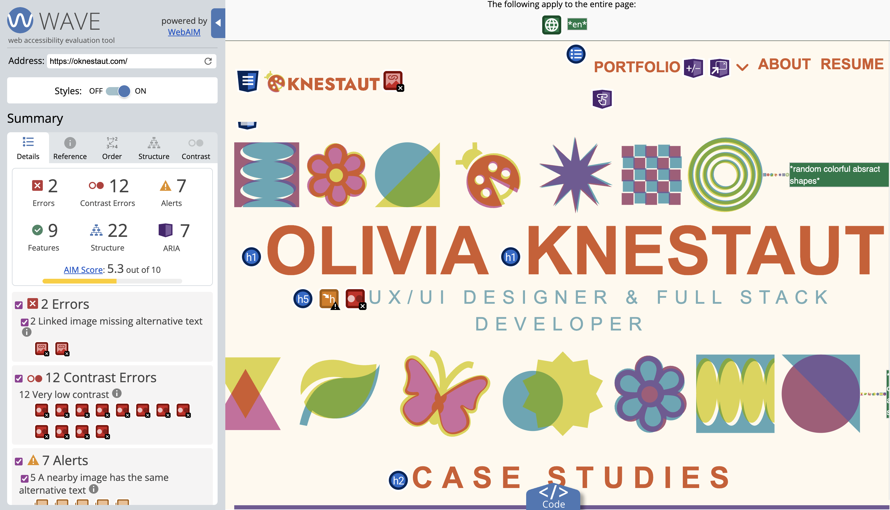
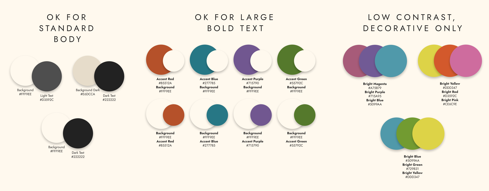
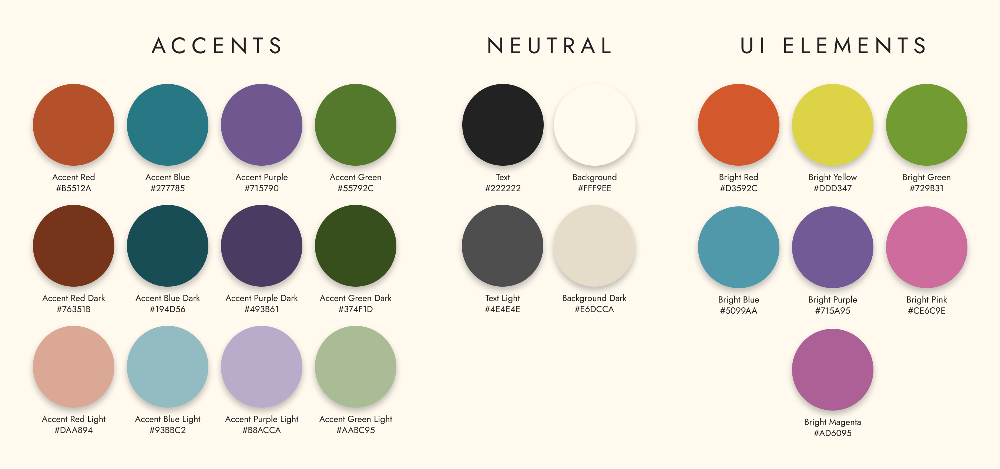
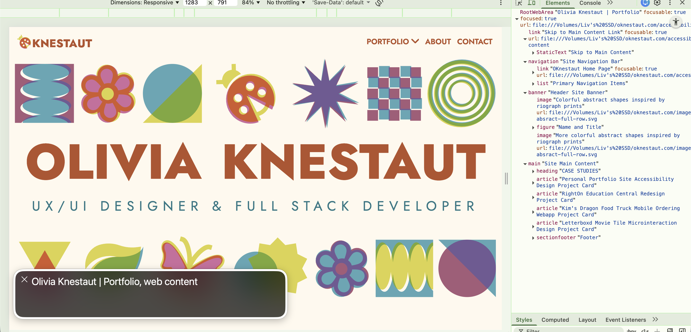

OVERVIEW
This project is an accessibility design and development project to optimize my personal portfolio site in alignment with inclusive design principles. It was created for the class IDM T380 , Scripting for Accessibility Design, under the direction of Professor Jervis Thompson. Working individually, but with class and instructor support, we were tasked with stripping and refining the site structure, labeling, and aria usage. Through each step of the process I balanced the UI design with the new inclusive improvements. The final build includes the site home page, about page, and contact form.
CONTEXT & CHALLENGE
PROJECT BACKGROUND
My personal portfolio website is consolidates my work and accomplishments into one location to present to future employers and collaborators. It is important that my site be accessible to as many users as possible improve my career prospects and ensure all users have equal access to media. Over the span of 10 weeks, I worked individually to design, and develop my improved accessible website.
The project operated within the constraints of academic guidelines, requiring the use of HTML, CSS, and JavaScript to produce a functional prototype. The improvements were designed to fit within the existing established branding. My process included multiple design and development phases, culminating in a final build that will soon be generally incorporated into the main site infrastructure.
THE PROBLEM
Currently, my personal site is in need of improvements to better meet the needs of all users. Structurally, it uses many div and span classes that are not user friendly for those with screen readers. The color contrast can be improved to meet a higher level of Accessibility Standards and the fonts can be updated to better adapt to users at higher levels of zoom. WebAIM's Web Accessibility Evaluation Tool gave the current site a 5.3 out of 10.

GOALS & OBJECTIVES
The success of this project was defined by achieving the following tangible goals:
- Higher Color Contrast Standards: Meet WCAG AAA Standards for all text across site pages.
- Screen Reader Accessibility: Utilize ARIA labels, semantic HTML, heading hierarchies, and alt text across site for users navigating with screen readers.
- Improved Keyboard Navigation: Incorporate skip buttons for navigation sections with 3+ links.
- Text Legibility and Zoom: Ensure text resizes on zoom without breaking the website design and improve text spacing for improved legibility
With these objectives in mind, I can holistically improve the user experience of my site for a more diverse range of users ensuring my work is visible to all.
PROCESS & INSIGHT
COLOR CONTRAST
Pulling from the original site color scheme I tested and improved the color contrast for all color pairings. I tested the color pairings using Vispero's Colour Contrast Analyser (CCA) and the WebAIM WAVE Tool to ensure compliance with WCAG Level AAA for all text in use. Text is also aligned with APCA (Accessible Perceptual Contrast Algorithm) which is a Candidate Contrast Method for WCAG 3. Contrast ratios are a minimum of 7:1 for body/small text, 4.5:1 for large text, and 3:1 for non-text and UI elements. Additionally, color is not used as the only means of communication instead it is used in combination with the text content and iconography.


IMPROVED KEYBOARD NAVIGATION
By changing the content order to be more meaningful I improved the keyboard navigation experience. All site functionality is operable through a keyboard alone. Additionally, on focus additional content remains visible until the focus trigger is removed and focus highlights are visible against system colors. Finally, several hidden buttons can be used to bypass repetitive content or links in groups of more than three.
SCREEN READER OPTIMIZATION
To optimize the site for a screen reader the content was restructured using semantic HTML to better identify the regions of the page. Values like H1 through H6 were ordered properly across the pages. ARIA labels were also incorporated to aid in identification of elements. All important image content contains alt text to describe image content. On several pages non-text content that is pure decoration is implemented in a way that it can be ignored by assistive technology.

TEXT AND ZOOM
By improving general text readability with relative text measurements like rem and vw text content can be resized up to 200% without affecting content presentation or functionality. Adjustments to text size, letter spacing, and line spacing ensures the visual presentation of the text is legible for all users.
SOLUTION
The culmination of these accessibility improvements is this final portfolio website. While developing these updates I wanted to ensure I was able to maintain the brand identity I had already established even if changing colors to better comply with WCAG standards. Try running the WebAIM WAVE Assessment to see the improved 10/10 score.
RESULTS
This final iteration of my personal portfolio website successfully met its objectives, providing higher contrast colors, improved keyboard navigation, screen reader optimization, and text legibility on zoom. This project improves the my portfolios reach by ensuring accessibility for a wide range of users. I have plans to expand this functionality to all site pages and content.